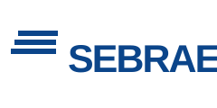

Técnico
SENAI
Formação para a indústria
Cursos profissionalizantes e oportunidades de qualificação em áreas como tecnologia, elétrica e mecânica. Verifique editais e turmas gratuitas.
Ofertas gratuitas por turmaConhecer cursosPlataformas de formação para desenvolver habilidades e fortalecer seu currículo.
Cursos profissionalizantes e oportunidades de qualificação em áreas como tecnologia, elétrica e mecânica. Verifique editais e turmas gratuitas.
Ofertas gratuitas por turmaConhecer cursosCapacitações online em gestão, tecnologia, cidadania e outras áreas, com emissão de certificado nas formações elegíveis.
Cursos gratuitosConhecer cursos
EmpreendedorismoAulas de empreendedorismo, planejamento, finanças e atendimento, ideais para desenvolver habilidades profissionais.
Seleção de cursos gratuitosConhecer cursosProcure ofertas de gratuidade e bolsas nos programas do SENAC para cursos presenciais e a distância.
Gratuidade conforme programaConhecer cursosAcesso a cursos de várias instituições. Certificados e avaliações podem ser pagos; confira as opções de auxílio financeiro.
Pode exigir bolsa ou pagamentoConhecer cursosCursos de tecnologia, produtividade, administração e desenvolvimento pessoal que ajudam a fortalecer o currículo.
Cursos gratuitosConhecer cursosA oferta de turmas gratuitas, certificados e bolsas varia entre instituições e ao longo do tempo. Confira valores e regras antes de se inscrever. O link do SENAI leva às oportunidades de gratuidade no Paraná.